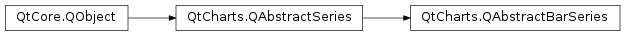

QtCharts.QAbstractBarSeries¶
Inherited by: QtCharts.QHorizontalPercentBarSeries, QtCharts.QHorizontalStackedBarSeries, QtCharts.QPercentBarSeries, QtCharts.QBarSeries, QtCharts.QHorizontalBarSeries, QtCharts.QStackedBarSeries
Note
This class was introduced in Qt 5.7.
Synopsis¶
Functions¶
- def
append(set) - def
append(sets) - def
barSets() - def
barWidth() - def
clear() - def
count() - def
insert(index, set) - def
isLabelsVisible() - def
labelsAngle() - def
labelsFormat() - def
labelsPosition() - def
labelsPrecision() - def
remove(set) - def
setBarWidth(width) - def
setLabelsAngle(angle) - def
setLabelsFormat(format) - def
setLabelsPosition(position) - def
setLabelsPrecision(precision) - def
setLabelsVisible([visible=true]) - def
take(set)
Signals¶
- def
barsetsAdded(sets) - def
barsetsRemoved(sets) - def
clicked(index, barset) - def
countChanged() - def
doubleClicked(index, barset) - def
hovered(status, index, barset) - def
labelsAngleChanged(angle) - def
labelsFormatChanged(format) - def
labelsPositionChanged(position) - def
labelsPrecisionChanged(precision) - def
labelsVisibleChanged() - def
pressed(index, barset) - def
released(index, barset)
Detailed Description¶
-
PySide2.QtCharts.QtCharts.QAbstractBarSeries.LabelsPosition¶
-
PySide2.QtCharts.QtCharts.QAbstractBarSeries.append(sets)¶ Parameters: sets – Return type: PySide2.QtCore.bool
-
PySide2.QtCharts.QtCharts.QAbstractBarSeries.append(set) Parameters: set – PySide2.QtCharts.QtCharts::QBarSetReturn type: PySide2.QtCore.bool
-
PySide2.QtCharts.QtCharts.QAbstractBarSeries.barSets()¶ Return type:
-
PySide2.QtCharts.QtCharts.QAbstractBarSeries.barWidth()¶ Return type: PySide2.QtCore.qreal
-
PySide2.QtCharts.QtCharts.QAbstractBarSeries.barsetsAdded(sets)¶ Parameters: sets –
-
PySide2.QtCharts.QtCharts.QAbstractBarSeries.barsetsRemoved(sets)¶ Parameters: sets –
-
PySide2.QtCharts.QtCharts.QAbstractBarSeries.clear()¶
-
PySide2.QtCharts.QtCharts.QAbstractBarSeries.clicked(index, barset)¶ Parameters: - index –
PySide2.QtCore.int - barset –
PySide2.QtCharts.QtCharts::QBarSet
- index –
-
PySide2.QtCharts.QtCharts.QAbstractBarSeries.count()¶ Return type: PySide2.QtCore.int
-
PySide2.QtCharts.QtCharts.QAbstractBarSeries.countChanged()¶
-
PySide2.QtCharts.QtCharts.QAbstractBarSeries.doubleClicked(index, barset)¶ Parameters: - index –
PySide2.QtCore.int - barset –
PySide2.QtCharts.QtCharts::QBarSet
- index –
-
PySide2.QtCharts.QtCharts.QAbstractBarSeries.hovered(status, index, barset)¶ Parameters: - status –
PySide2.QtCore.bool - index –
PySide2.QtCore.int - barset –
PySide2.QtCharts.QtCharts::QBarSet
- status –
-
PySide2.QtCharts.QtCharts.QAbstractBarSeries.insert(index, set)¶ Parameters: - index –
PySide2.QtCore.int - set –
PySide2.QtCharts.QtCharts::QBarSet
Return type: PySide2.QtCore.bool- index –
-
PySide2.QtCharts.QtCharts.QAbstractBarSeries.isLabelsVisible()¶ Return type: PySide2.QtCore.bool
-
PySide2.QtCharts.QtCharts.QAbstractBarSeries.labelsAngle()¶ Return type: PySide2.QtCore.qreal
-
PySide2.QtCharts.QtCharts.QAbstractBarSeries.labelsAngleChanged(angle)¶ Parameters: angle – PySide2.QtCore.qreal
-
PySide2.QtCharts.QtCharts.QAbstractBarSeries.labelsFormat()¶ Return type: unicode
-
PySide2.QtCharts.QtCharts.QAbstractBarSeries.labelsFormatChanged(format)¶ Parameters: format – unicode
-
PySide2.QtCharts.QtCharts.QAbstractBarSeries.labelsPosition()¶ Return type: PySide2.QtCharts.QtCharts::QAbstractBarSeries.LabelsPosition
-
PySide2.QtCharts.QtCharts.QAbstractBarSeries.labelsPositionChanged(position)¶ Parameters: position – PySide2.QtCharts.QtCharts::QAbstractBarSeries.LabelsPosition
-
PySide2.QtCharts.QtCharts.QAbstractBarSeries.labelsPrecision()¶ Return type: PySide2.QtCore.int
-
PySide2.QtCharts.QtCharts.QAbstractBarSeries.labelsPrecisionChanged(precision)¶ Parameters: precision – PySide2.QtCore.int
-
PySide2.QtCharts.QtCharts.QAbstractBarSeries.labelsVisibleChanged()¶
-
PySide2.QtCharts.QtCharts.QAbstractBarSeries.pressed(index, barset)¶ Parameters: - index –
PySide2.QtCore.int - barset –
PySide2.QtCharts.QtCharts::QBarSet
- index –
-
PySide2.QtCharts.QtCharts.QAbstractBarSeries.released(index, barset)¶ Parameters: - index –
PySide2.QtCore.int - barset –
PySide2.QtCharts.QtCharts::QBarSet
- index –
-
PySide2.QtCharts.QtCharts.QAbstractBarSeries.remove(set)¶ Parameters: set – PySide2.QtCharts.QtCharts::QBarSetReturn type: PySide2.QtCore.bool
-
PySide2.QtCharts.QtCharts.QAbstractBarSeries.setBarWidth(width)¶ Parameters: width – PySide2.QtCore.qreal
-
PySide2.QtCharts.QtCharts.QAbstractBarSeries.setLabelsAngle(angle)¶ Parameters: angle – PySide2.QtCore.qreal
-
PySide2.QtCharts.QtCharts.QAbstractBarSeries.setLabelsFormat(format)¶ Parameters: format – unicode
-
PySide2.QtCharts.QtCharts.QAbstractBarSeries.setLabelsPosition(position)¶ Parameters: position – PySide2.QtCharts.QtCharts::QAbstractBarSeries.LabelsPosition
-
PySide2.QtCharts.QtCharts.QAbstractBarSeries.setLabelsPrecision(precision)¶ Parameters: precision – PySide2.QtCore.int
-
PySide2.QtCharts.QtCharts.QAbstractBarSeries.setLabelsVisible([visible=true])¶ Parameters: visible – PySide2.QtCore.bool
-
PySide2.QtCharts.QtCharts.QAbstractBarSeries.take(set)¶ Parameters: set – PySide2.QtCharts.QtCharts::QBarSetReturn type: PySide2.QtCore.bool
© 2018 The Qt Company Ltd. Documentation contributions included herein are the copyrights of their respective owners. The documentation provided herein is licensed under the terms of the GNU Free Documentation License version 1.3 as published by the Free Software Foundation. Qt and respective logos are trademarks of The Qt Company Ltd. in Finland and/or other countries worldwide. All other trademarks are property of their respective owners.